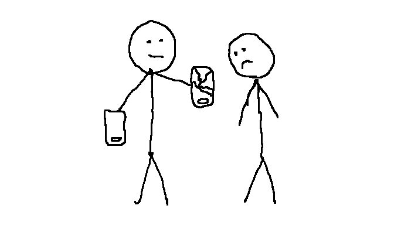

Törött telefont adott el Szinusz
Zevidu Brendon 8.C-s diák és Szinusz megbeszélték, hogy Szinusz eladja neki a telefonját. Ez a mai napon meg is történt. Szinusz behozta az amúgy makulátlan állapotban lévő telefonját a dobozával és csomagolásával együtt. Ezt Zevidu meg is vette tőle. A probléma akkor kezdődött, amikor 5 perc múlva Zevidu hozta a telefont, és megmutatta, hogy van rajta egy törés. Azt mondta, azért nem vette észre, mert csak egy bizonyos szögből látszik. Később azt is megmutatta, hogy a képernyőjén foltok vannak. Szinusz mindezt nem értette, hiszen ő makulátlan állapotban adta oda Zevidunak a telefont. Attól is félt, hogy Zevidu visszakéri a pénzét. Mint később kiderült, Zevidunak már volt egy ugyan olyan telefonja, ami rossz állaoptú, azt mutatta meg Szinusznak. Az is kiderült, hogy Zevidu már mondta Szinusznak, hogy van egy olyan telefonja, de ezt Szinusz elfelejtette.